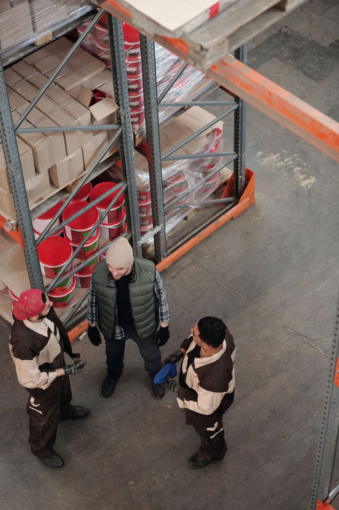

01 / ANALYSE
Prozesse verstehen
Wir machen sichtbar, wie Arbeit heute wirklich läuft, wo Reibung entsteht und welche Stellschrauben den größten Unterschied machen.
Wir helfen mittelständischen Unternehmen, Abläufe zu verbessern, Zusammenarbeit zu stärken und KI-Automatisierung sowie individuelle Software dort einzusetzen, wo sie den Arbeitsalltag wirklich erleichtern.
Wenn Zuständigkeiten unklar sind oder Prozesse nicht mehr zum Unternehmen passen, kostet das Zeit und Energie. Wir schaffen gemeinsam einen Überblick und entwickeln Lösungen, die zu Ihrem Betrieb passen – auch beim sinnvollen Einsatz von KI.
Wir machen sichtbar, wie Arbeit heute wirklich läuft, wo Reibung entsteht und welche Stellschrauben den größten Unterschied machen.
Gemeinsam vereinfachen wir Abläufe, klären Verantwortlichkeiten und gestalten Zusammenarbeit so, dass sie im Alltag trägt.
Wir unterstützen Führungskräfte und Teams dabei, neue Arbeitsweisen verständlich einzuführen und dauerhaft zu verankern.
Wir identifizieren passende Anwendungsfälle für Automatisierung, individuelle KI-Software und die Optimierung bestehender Chatbots.
Wir unterstützen Sie dabei, sinnvolle Anwendungsfälle zu erkennen und in konkrete Lösungen zu übersetzen – von automatisierten Abläufen über individuelle KI-Software bis zur Verbesserung bestehender Chatbots. Ausgangspunkt sind Ihre Prozesse, Ihre Daten und der tatsächliche Nutzen für Ihr Team.
KI-Anwendungsfall besprechenWiederkehrende Arbeitsschritte erkennen und passende Abläufe mit klaren Kontrollpunkten automatisieren.
Bedarf klären und maßgeschneiderte KI-Anwendungen entwickeln, die sich in bestehende Arbeitsabläufe einfügen.
Wissensbasis, Antwortqualität und Übergabe an Mitarbeitende gezielt verbessern.
Drei Situationen, die uns aus dem Mittelstand und dem Logistikumfeld vertraut sind – und wie ein gemeinsamer Weg zu spürbarer Entlastung aussehen kann.
Die Beispiele beschreiben typische Ausgangslagen. Gerne besprechen wir, wie es in Ihrem Unternehmen aussieht.
Jedes Unternehmen ist anders. Deshalb beginnen wir mit Ihren konkreten Fragen und entwickeln den nächsten sinnvollen Schritt gemeinsam mit den Menschen, die täglich mit den Abläufen arbeiten.
Wir sprechen mit Ihnen und Ihrem Team über Ziele, Herausforderungen und den Arbeitsalltag.
Wir bringen Beobachtungen zusammen und machen Zusammenhänge und Handlungsfelder greifbar.
Wir entwickeln umsetzbare Lösungen, die Ihre Ressourcen und Ihre Unternehmenskultur berücksichtigen.
Wir begleiten die Umsetzung und prüfen gemeinsam, was sich verbessert und was noch gebraucht wird.
Wir beginnen dort, wo es für Sie sinnvoll ist: mit einem klaren Blick auf einen Ablauf, mit einer begleiteten Umsetzung oder mit einem ersten KI-Anwendungsfall.
Ein kompakter Blick auf einen ausgewählten Ablauf.
Wir bleiben an Ihrer Seite, bis die Veränderung im Alltag trägt.
Ein konkreter KI-Anwendungsfall, schnell und überschaubar erprobt.
Umfang und Kosten legen wir nach dem Erstgespräch in einem transparenten Angebot fest.

Zwei sich ergänzende Perspektiven: Prozess und Qualität auf der einen, Digitalisierung und Automatisierung auf der anderen Seite.
Gemeinsam verbinden wir praktische Erfahrung aus dem Logistikumfeld mit fundiertem Prozesswissen und technischem Know-how. So entstehen Lösungen, die im Betrieb funktionieren und sich sinnvoll weiterentwickeln lassen.
Gründer · Prozessoptimierung & Qualitätsmanagement
Mitgründer · Digitalisierung & Automatisierung
Antworten auf Fragen, die uns vor einer Zusammenarbeit oft gestellt werden. Fehlt Ihre Frage? Schreiben Sie uns einfach.
Wir arbeiten mit kleinen und mittelständischen Unternehmen, die ihre Abläufe vereinfachen, ihr Team entlasten oder KI sinnvoll einsetzen möchten – besonders in Logistik, Handel, Produktion und Dienstleistung.
Sie wählen einen Wunschtermin, wir bestätigen ihn per E-Mail. Im Gespräch per Telefon oder Video lernen wir Ihre Situation kennen und sagen Ihnen offen, ob und wie wir helfen können. Das Erstgespräch ist unverbindlich.
Das hängt vom Umfang ab. Nach dem Erstgespräch erhalten Sie ein schriftliches Angebot mit klar beschriebenen Leistungen, Zeitrahmen und Kosten. Es gibt keine versteckten Positionen.
Nein. Wir wählen Lösungen, die zu Ihren vorhandenen Systemen und Ihrem Team passen, und kümmern uns um Einrichtung, Einweisung und eine verständliche Dokumentation.
Wir klären zu Beginn, welche Daten verarbeitet werden dürfen, bevorzugen datenschutzfreundliche Lösungen mit Servern in der EU und setzen auf Kontrollpunkte, an denen Menschen die Ergebnisse prüfen. Vertrauliche Daten verlassen Ihr Unternehmen nur nach Absprache.
Beides. Abläufe verstehen wir am besten vor Ort bei Ihnen. Viele Termine lassen sich aber auch per Video durchführen. Das stimmen wir gemeinsam ab.
Erzählen Sie uns, was Sie gerade beschäftigt. In einem ersten Gespräch sortieren wir gemeinsam Ihre Fragen und finden heraus, ob und wie wir Sie unterstützen können.
Wählen Sie einen passenden Wunschtermin für ein unverbindliches Erstgespräch. Wir melden uns per E-Mail zurück und bestätigen den Termin oder schlagen eine Alternative vor.